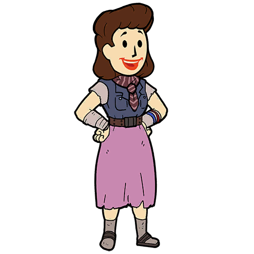
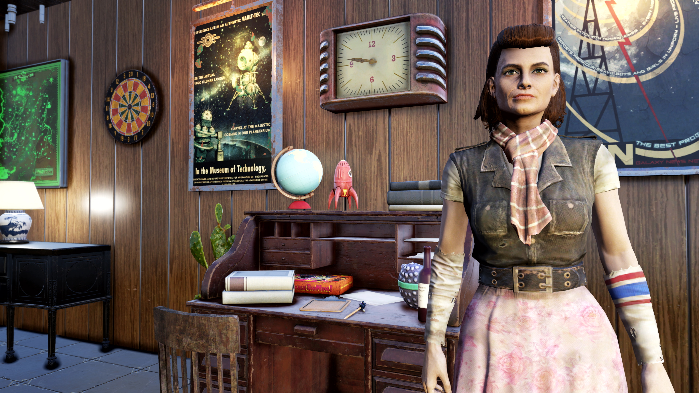

Katherine Swan
キャサリン・スワン — アパラチアの天文学者
概要
キャサリン "キャット" スワンは、アパラチアに住む同居人の候補である。
職業は天文学者であり、熱心な地球外生命体研究者でもある。
キャサリンはFallout 76のシーズン7「ゾルボの逆襲」のランク25報酬として解放された。
また、「Invaders from Beyond」アップデートで彼女のプランが追加された。
背景

10代の頃、キャサリンは無関心な性格で、生物学・化学・物理学のいずれかを専攻しようと考えていた。
しかし、これらの学問に満足感を見出せず、どれも退屈に感じていた。
ウォルト・ホイットマンの詩「学識ある天文学者の話を聞いた時」を知ったことが転機となった。
この詩を暗唱できるまで覚えた彼女は、地球外の探求へと目を向けるようになった。
発見そのもののスリルに魅了され、自分の天職を見つけたのだと確信した。
両親の出会いの話は、成長するにつれて変わっていった。
何年もの間、母親は看護師だと聞かされていた。
しかし実際には、母親はアレゲニー精神病院の元患者であり、父親はVault-Tec大学で働いていた。
父親は自分のプロジェクトのために母親の助けが必要となり、コネを使って退院させた。
この真実を知ったキャサリンは衝撃を受け、自分も精神疾患を発症するのではないかと心配するようになった。
自分の正気を確認するために、「リンゴは木からどのくらい離れて落ちるのか？」という疑問を文字通り検証しようとした。
木を見つけて激しく揺すり、リンゴが頭に降り注いできたところでようやく止めた。
もし「狂っている」と呼ばれたら、相手をひっぱたくと脅すが、潔癖症を理由に引き下がる。
大戦の直後に家族を失い、トラウマを抱えた。
しかし、家族が戦後の悲惨な状況を免れたと考えて自分を慰めている。
ATLAS天文台を訪れたが、科学的手段の隠れ蓑として気象操作のために使われていたことを知り、落胆した。
その後、ブラザーフッド・オブ・スティールが占拠したアトラス砦を再訪した。
キャサリンはB.O.S.を「興味深い連中」と評する。
ある時期、キャサリンには元カノがいた。
交際を始めた理由は2つだけ。
1つは彼女がエイリアンだと思ったから（「シュガーボム」の「S」の発音が不自然に長かったのが怪しかった）。
もう1つは単純にかわいかったから。
実際には彼女は文字が読めなかったのだが、かわいさゆえに見て見ぬふりをしていた。
性格
天文学者としてのキャリアを持つキャサリンは、地球外生命体の研究にも熱心である。
エイリアンに対する理論化は執着のレベルに達しており、自分自身の好みやバイアスに基づいて理論を構築する。
人類を「退屈」「臆病」「馬鹿げている」「失敗した実験」と辛辣に表現する。
SFと現実を区別できない（あるいはしようとしない）。
趣味
適切なワークライフバランスを信じている彼女は、余暇にはSF映画を観たり、クラシック音楽を聴いたり、読書をしたり、ワインを飲んだりする。
お気に入りのゲームは「ザ・レジェンダリー・ラン」。
星座を覚えておくべきだと考えている。
風は変わっても、北極星は裏切らない。
科学観
惑星を研究する時は赤ワイン（火星を連想するから）、星を研究する時は白ワイン、両方同時の時はロゼを飲む。
猫は変装したエイリアンだという説も持っている。
愛猫のハーシェル（女性天文学者カロライン・ハーシェルにちなんで命名）は、場所から場所へと瞬間移動するかのようだった。
核戦争のアポカリプスは、地球外文明との関係を少なくとも1世紀後退させたと信じている。
フラットウッズ・モンスターの遭遇報告を調査し、実際にはエイリアンだと（正しく）信じている。
自分がエイリアンの誘拐対象に選ばれる基準を満たせないことにフラストレーションを感じている。
最も遠い星へ旅し、他の世界を歩きたいと夢見ている。
キャプテン・コスモスについて
ジャングルズ・ザ・ムーンモンキーは人類の「臆病さ」の完璧な象徴だと考えている。
ゾルボの描写はキャプテン・コスモス自身よりも「馬鹿げていない」とも言う。
キャプテン・コスモスは「人間の鏡像」であり、常に勝つ彼の姿は人類がいかに自分自身の重要性について妄想を抱いているかを示している。
プレイヤーとのインタラクション
キャサリンはエッセンシャルNPCであり、同居人としてC.A.M.P.に配置できる。
専用家具は「キャサリンの研究デスク」。
ベンダーとしてエネルギー武器、エネルギー弾薬、実験室系ジャンクなどを販売する。
デイリーバフ：Alien Astronomer
- エネルギー弾薬の重量 -50%
- Perception +1
装備
- ボロボロのスカート
メモ
- キャサリンのC.A.M.P.での挙動として、宇宙・科学・エイリアンに関する独自の理論を語ることがある。
- 愛猫ハーシェルの名前は、18世紀の女性天文学者カロライン・ハーシェルに由来する。
名言集
個人的にはバランスを信じている。
空の星は疑いなく美しいが、空白がなければその光は目を眩ませるだろう。
しかし虚空しかなければ、空虚で孤独を感じるだろう。」
人々は日の出と言うが、本当の意味は、惑星がまた一回転したということだ。」
あまりに多くの学者が、答えは既に知られていると決めてかかって本を開く。」
土、水、風、火だ。
彼は天界を表す5番目の元素も挙げた。
エーテルだ。
宇宙を広げるその未知の粒子、第五元素。
それこそが私の天職だ。」
紅茶の方が圧倒的に優れている。」
登場作品
キャサリン・スワンはFallout 76に登場する。
舞台裏
- キャサリンが引用するウォルト・ホイットマンの詩「学識ある天文学者の話を聞いた時」は、証明や数字ではなく沈黙と観察の中に宇宙の真理があるとうたう実在の詩である。
- マリア・ミッチェルへの言及は、19世紀アメリカの女性天文学者への実際の歴史的オマージュ。
- 愛猫ハーシェルの名前は、天王星を発見したウィリアム・ハーシェルの妹で、自身も多くの彗星を発見したカロライン・ハーシェルへの敬意。
- 「第五元素」（クインタエッセンス）への言及は、アリストテレスの古代ギリシャ哲学における天界の構成要素のこと。
- 声優のジュディ・アリス・リーは、ベセスダ作品での他のキャラクターの声も担当している。
ギャラリー

キャサリン・スワンをC.A.M.P.に迎え入れると、まず彼女の独特な世界観に引き込まれますね。
天文学者として星を見上げながら、エイリアンの存在を本気で信じている。
でもそれが単なる「変わった人」で終わらないのがFallout 76のキャラクターの奥深さで、彼女の背景を知れば知るほど、その信念の根っこにある孤独や渇望が見えてくるんです。
母親がアレゲニー精神病院の元患者だったという事実を知った時の衝撃、そして「自分も狂っているのでは」という恐怖を文字通りリンゴの木を揺すって検証するというエピソードが最高に彼女らしい。
科学者でありながら、その科学的手法がどこかズレている。
でもそのズレこそが彼女の魅力なんですよね〜。
キャプテン・コスモスに対する見解も面白い。
ゾルボの方がキャプテン・コスモスより「馬鹿げていない」と言い切るあたり、彼女の価値観がよく表れています。
ワインの選び方も最高に好き。
惑星の研究には赤ワイン（火星のイメージ）、星の研究には白ワイン、両方やる時はロゼ。
こういう細かいこだわりがキャラクターに命を吹き込んでいて、C.A.M.P.に置いておくだけで世界観が豊かになる仲間です。
This article was created by translating and editing Katherine Swan from Nukapedia: The Fallout Wiki.
Licensed under the Creative Commons Attribution-Share Alike License (CC BY-SA 3.0).
コミュニティ維持のため、寄付を受け付けております。
> COMMENTS